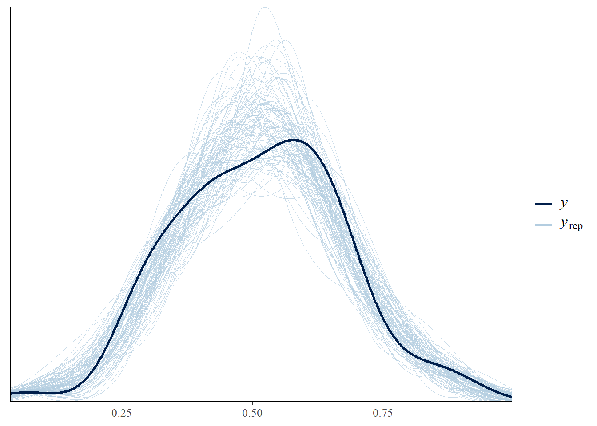
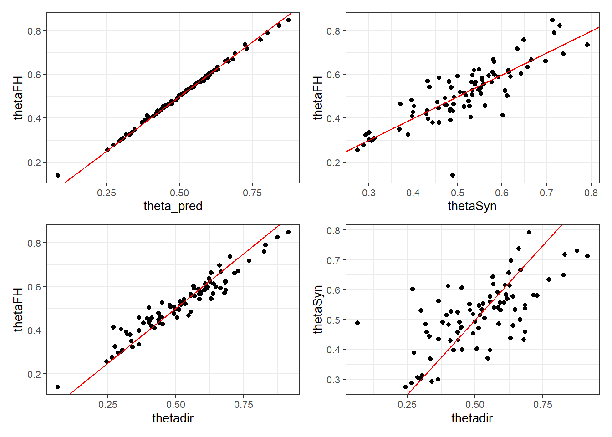
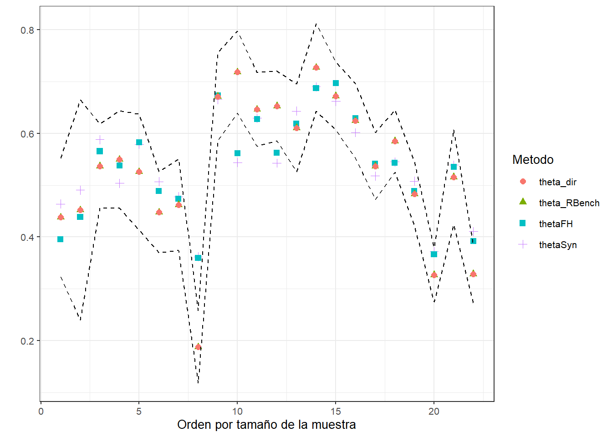
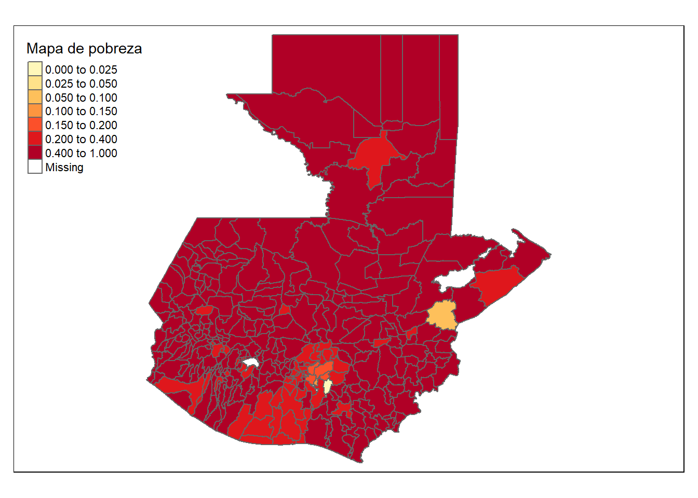

library(tidyverse)
library(magrittr)
base_FH <- readRDS("Data/base_FH_2014.rds") %>%
select(dam2, nd, pobreza, vardir, hat_var)Modelo de Fay Herriot (Normal)
CEPAL - Unidad de Estadísticas Sociales
El modelo de Fay Herriot FH, propuesto por Fay y Herriot (1979), es un modelo estadístico de área y es el más comúnmente utilizado, cabe tener en cuenta, que dentro de la metodología de estimación en áreas pequeñas, los modelos de área son los de mayor aplicación, ya que lo más factible es no contar con la información a nivel de individuo, pero si encontrar no solo los datos a nivel de área, sino también información auxiliar asociada a estos datos. Este modelo lineal mixto, fue el primero en incluir efectos aleatorios a nivel de área, lo que implica que la mayoría de la información que se introduce al modelo corresponde a agregaciaciones usualmente, departamentos, regiones, provincias, municipios entre otros, donde las estimaciones que se logran con el modelo se obtienen sobre estas agregaciones o subpoblaciones.
- El modelo FH enlaza indicadores de las áreas \(\delta_d\), \(d = 1, \cdots , D\), asumiendo que varían respeto a un vector de \(p\) covariables, \(\boldsymbol{x}_d\) , de forma constante. El modelo esta dado por la ecuación
\[ \delta_d = \boldsymbol{x^T}_d\boldsymbol{\beta} + u_d ,\ \ \ \ \ d = 1, \cdots , D \]
- \(u_d\) es el término de error, o el efecto aleatorio, diferente para cada área dado por
\[ \begin{eqnarray*} u_{d} & \stackrel{iid}{\sim} & \left(0,\sigma_{u}^{2}\right) \end{eqnarray*} \]
Sin embargo, los verdaderos valores de los indicadores \(\delta_d\) no son observables. Entonces, usamos el estimador directo \(\hat{\delta}^{DIR}_d\) para \(\delta_d\) , lo que conlleva un error debido al muestro.
\(\hat{\delta}^{DIR}_d\) todavía se considera insesgado bajo el diseño muestral.
Podemos definir, entonces,
\[ \hat{\delta}^{DIR}_d = \delta_d + e_d, \ \ \ \ \ \ d = 1, \cdots , D \]
donde \(e_d\) es el error debido al muestreo, \(e_{d} \stackrel{ind}{\sim} \left(0,\psi\right)\)
Dichas varianzas \(\psi_d = var_{\pi}\left(\hat{\delta}^{DIR}_d\mid\delta_d\right)\), \(d = 1,\cdots,D\) se estiman con los microdatos de la encuesta.
Por tanto, el modelo se hace, \[ \hat{\delta}^{DIR}_d = \boldsymbol{x^T}_d\boldsymbol{\beta} + u_d + e_d, \ \ \ \ \ \ d = 1, \cdots , D \]
El BLUP (best linear unbiased predictor) bajo el modelo FH de \(\delta_d\) viene dado por
\[ \begin{eqnarray*} \tilde{\delta}_{d}^{FH} & = & \boldsymbol{x_d}^{T}\tilde{\boldsymbol{\beta}}+\tilde{u}_{d} \end{eqnarray*} \]
Si sustituimos \(\tilde{u}_d = \gamma_d\left(\hat{\delta}^{DIR}_d - \boldsymbol{x_d}^{T}\tilde{\boldsymbol{\beta}} \right)\) en el BLUP bajo el modelo FH, obtenemos \[ \begin{eqnarray*} \tilde{\delta}_{d}^{FH} & = & \gamma_d\hat{\delta}^{DIR}_{d}+(1-\gamma_d)\boldsymbol{x_d}^{T}\tilde{\boldsymbol{\beta}} \end{eqnarray*} \] siendo \(\gamma_d=\frac{\sigma^2_u}{\sigma^2_u + \psi_d}\).
Habitualmente, no sabemos el verdadero valor de \(\sigma^2_u\) efectos aleatorios \(u_d\).
Sea \(\hat{\sigma}^2_u\) un estimador consistente para \(\sigma^2_u\). Entonces, obtenemos el BLUP empírico (empirical BLUP, EBLUP) de \(\delta_d\) ,
\[ \begin{eqnarray*} \tilde{\delta}_{d}^{FH} & = & \hat{\gamma_d}\hat{\delta}^{DIR}_{d}+(1-\hat{\gamma_d})\boldsymbol{x_d}^{T}\hat{\boldsymbol{\beta}} \end{eqnarray*} \]
donde \(\hat{\gamma_d}=\frac{\hat{\sigma}^2_u}{\hat{\sigma}^2_u + \psi_d}\).
- Un estimador insesgado de segundo orden del ECM (llamado el estimador Prasad-Rao) viene dado por
\[ \begin{eqnarray*} mse_{PR}\left(\tilde{\delta}_{d}^{FH}\right) & = & g_{1d}\left(\hat{\sigma}_{u}^{2}\right)+g_{2d}\left(\hat{\sigma}_{u}^{2}\right)+2g_{3d}\left(\hat{\sigma}_{u}^{2}\right) \end{eqnarray*} con \] con
\[ \begin{eqnarray*} g_{1d}\left(\hat{\sigma}_{u}^{2}\right) & = & \gamma_{d}\psi_{d}\\ g_{2d}\left(\hat{\sigma}_{u}^{2}\right) & = & \left(1-\gamma_{d}\right)^{2}\boldsymbol{x}^{T}\left(\sum_{d=1}^{D}\left(\sigma_{u}^{2}+\psi_{d}\right)\boldsymbol{x}_{d}\boldsymbol{x}_{d}^{T}\right)^{-1}\boldsymbol{x}_{d},\\ g_{3d}\left(\hat{\sigma}_{u}^{2}\right) & = & \left(1-\gamma_{d}\right)^{2}\left(\sigma_{u}^{2}+\psi_{d}\right)^{-1}\overline{var}\left(\hat{\sigma}_{u}^{2}\right), \end{eqnarray*} \]
donde \[ \begin{eqnarray*} \overline{var}\left(\hat{\sigma}_{u}^{2}\right) & = & \mathit{I}^{-1 }\left(\sigma_{u}^{2}\right)=2\left\{ \sum_{d=1}^{D}\left(\sigma_{u}^{2}+\psi_{d}\right)^{-2}\right\} ^{-1} \end{eqnarray*} \] para un estimador REML y \(\mathit{I}\) es la información Fisher
El estimador directo no es el único insumo del modelo de áreas de Fay-Herriot; también lo es su varianza. El estimador puntual da un indicio de la localización del parámetro, y su varianza presenta el nivel de certeza o confianza sobre esta localización.
Al tratar con cifras provenientes de procesamientos con encuestas de hogares, es indispensable siempre tener en cuenta que el sustento inferencial recae en la estrategia de muestreo, definida como la dupla compuesta por el diseño de muestreo y el estimador escogido.
\[ \begin{eqnarray*} Y\mid\mu,\sigma_{e} & \sim & N\left(\mu,\sigma_{e}\right)\\ \mu & = & \boldsymbol{X\beta}+V \end{eqnarray*} \]
donde \(V \sim N(0 , \sigma_v)\).
Las distribuciones previas para \(\boldsymbol{\beta}\) y \(\sigma^2_v\)
\[ \begin{eqnarray*} \beta_k & \sim & N(\mu_0, \tau^2_0)\\ \sigma^2_v &\sim & IG(\alpha_1,\alpha_2) \end{eqnarray*} \]
Procesamiento en R
Lectura de la base de datos que resultó en el paso anterior y selección de las columnas de interés
Lectura de las covariables, las cuales son obtenidas previamente. Dado la diferencia entre las escalas de las variables es necesario hacer un ajuste a estas.
#00118 00720 Lagos
statelevel_predictors_df <- readRDS("Data/statelevel_predictors_df_dam2.rds") %>%
mutate_at(.vars = c("luces_nocturnas",
"suelo_cultivos",
"suelo_urbanos",
"modifica_humana",
"tiempo_hospital",
"tiempo_hospital_no_motor"),
function(x) scale(x)*2+5)Uniendo las dos bases de datos.
base_FH <- full_join(base_FH, statelevel_predictors_df, by = "dam2" )
tba(base_FH[1:10,1:8] %>% head(10))| dam2 | nd | pobreza | vardir | hat_var | dam | luces_nocturnas | suelo_cultivos |
|---|---|---|---|---|---|---|---|
| 01007 | 186 | 0.2996 | 0.0131 | 0.0093 | 01 | 6.425316 | 4.354648 |
| 02001 | 400 | 0.4211 | 0.0094 | 0.0105 | 02 | 5.286546 | 5.028009 |
| 02002 | 192 | 0.4476 | 0.0290 | 0.0125 | 02 | 3.781731 | 4.867647 |
| 02003 | 260 | 0.5179 | 0.0039 | 0.0117 | 02 | 4.856416 | 5.126377 |
| 02006 | 190 | 0.5351 | 0.0202 | 0.0120 | 02 | 4.052222 | 4.628283 |
| 02007 | 487 | 0.4423 | 0.0091 | 0.0097 | 02 | 6.641498 | 4.895508 |
| 03001 | 449 | 0.2990 | 0.0034 | 0.0076 | 03 | 6.961710 | 4.249805 |
| 03002 | 408 | 0.2658 | 0.0089 | 0.0068 | 03 | 4.070177 | 4.231679 |
| 03004 | 502 | 0.3215 | 0.0030 | 0.0077 | 03 | 5.196541 | 4.356746 |
| 03006 | 371 | 0.3650 | 0.0079 | 0.0100 | 03 | 5.721913 | 4.300431 |
Preparando los insumos para STAN
Dividir la base de datos en dominios observados y no observados
Dominios observados.
data_dir <- base_FH %>% filter(!is.na(pobreza))Dominios NO observados.
data_syn <-
base_FH %>% anti_join(data_dir %>% select(dam2))
tba(data_syn[1:10,1:8])| dam2 | nd | pobreza | vardir | hat_var | dam | luces_nocturnas | suelo_cultivos |
|---|---|---|---|---|---|---|---|
| 16012 | NA | NA | NA | NA | 16 | 3.505455 | 4.478813 |
| 16014 | NA | NA | NA | NA | 16 | 3.512824 | 4.885733 |
| 16013 | NA | NA | NA | NA | 16 | 4.050201 | 6.436918 |
| 16015 | NA | NA | NA | NA | 16 | 3.914447 | 7.543074 |
| 16011 | NA | NA | NA | NA | 16 | 3.674836 | 4.266054 |
| 16007 | NA | NA | NA | NA | 16 | 3.810438 | 6.130320 |
| 16017 | NA | NA | NA | NA | 16 | 3.749051 | 5.920236 |
| 16003 | NA | NA | NA | NA | 16 | 4.497657 | 4.271988 |
| 16010 | NA | NA | NA | NA | 16 | 3.958993 | 4.331455 |
| 16016 | NA | NA | NA | NA | 16 | 3.832718 | 4.668809 |
Matrix de covariables (Efectos fijos)
formula_mod <- formula(~ sexo2 +
anoest2 +
anoest3 +
anoest4 +
edad2 +
edad3 +
edad4 +
edad5 +
etnia1 +
etnia2 +
tasa_desocupacion +
luces_nocturnas +
suelo_cultivos +
rezago_escolar + alfabeta)
## Dominios observados
Xdat <- model.matrix(formula_mod, data = data_dir)
## Dominios no observados
Xs <- model.matrix(formula_mod, data = data_syn)Para realizar la predicción del modelo es necesario validar que \(X\) y \(Xs\) deben tener la mismas columnas en el mismo orden.
temp <- setdiff(colnames(Xdat),colnames(Xs))
temp <- matrix(
0,
nrow = nrow(Xs),
ncol = length(temp),
dimnames = list(1:nrow(Xs), temp)
)
Xs <- cbind(Xs,temp)[,colnames(Xdat)]Creando lista de parámetros para STAN
sample_data <- list(
N1 = nrow(Xdat), # Observados.
N2 = nrow(Xs), # NO Observados.
p = ncol(Xdat), # Número de regresores.
X = as.matrix(Xdat), # Covariables Observados.
Xs = as.matrix(Xs), # Covariables NO Observados
y = as.numeric(data_dir$pobreza), # Estimación directa
sigma_e = sqrt(data_dir$hat_var) # Error de estimación
)Rutina implementada en STAN
data {
int<lower=0> N1; // number of data items
int<lower=0> N2; // number of data items for prediction
int<lower=0> p; // number of predictors
matrix[N1, p] X; // predictor matrix
matrix[N2, p] Xs; // predictor matrix
vector[N1] y; // predictor matrix
vector[N1] sigma_e; // known variances
}
// The parameters accepted by the model. Our model
// accepts two parameters 'mu' and 'sigma'.
parameters {
vector[p] beta; // coefficients for predictors
real<lower=0> sigma2_v;
vector[N1] v;
}
transformed parameters{
vector[N1] theta;
vector[N1] thetaSyn;
vector[N1] thetaFH;
vector[N1] gammaj;
real<lower=0> sigma_v;
thetaSyn = X * beta;
theta = thetaSyn + v;
sigma_v = sqrt(sigma2_v);
gammaj = to_vector(sigma_v ./ (sigma_v + sigma_e));
thetaFH = (gammaj) .* y + (1-gammaj).*thetaSyn;
}
model {
// likelihood
y ~ normal(theta, sigma_e);
// priors
beta ~ normal(0, 100);
v ~ normal(0, sigma_v);
sigma2_v ~ inv_gamma(0.0001, 0.0001);
}
generated quantities{
vector[N2] y_pred;
for(j in 1:N2) {
y_pred[j] = normal_rng(Xs[j] * beta, sigma_v);
}
}Compilando el modelo en STAN
library(cmdstanr)
# file.edit("Data/modelosStan/17FH_normal.stan")
fit_FH_normal <- cmdstan_model("Data/modelosStan/17FH_normal.stan")
model_FH_normal <-
fit_FH_normal$sample(
data = sample_data,
chains = 4,
parallel_chains = 4,
iter_warmup = 2000,
iter_sampling = 1000,
seed = 1234,
refresh = 1000
)Running MCMC with 4 parallel chains...
Chain 1 Iteration: 1 / 3000 [ 0%] (Warmup)
Chain 2 Iteration: 1 / 3000 [ 0%] (Warmup)
Chain 3 Iteration: 1 / 3000 [ 0%] (Warmup)
Chain 4 Iteration: 1 / 3000 [ 0%] (Warmup)
Chain 3 Iteration: 1000 / 3000 [ 33%] (Warmup)
Chain 4 Iteration: 1000 / 3000 [ 33%] (Warmup)
Chain 2 Iteration: 1000 / 3000 [ 33%] (Warmup)
Chain 1 Iteration: 1000 / 3000 [ 33%] (Warmup)
Chain 4 Iteration: 2000 / 3000 [ 66%] (Warmup)
Chain 4 Iteration: 2001 / 3000 [ 66%] (Sampling)
Chain 3 Iteration: 2000 / 3000 [ 66%] (Warmup)
Chain 3 Iteration: 2001 / 3000 [ 66%] (Sampling)
Chain 2 Iteration: 2000 / 3000 [ 66%] (Warmup)
Chain 2 Iteration: 2001 / 3000 [ 66%] (Sampling)
Chain 1 Iteration: 2000 / 3000 [ 66%] (Warmup)
Chain 1 Iteration: 2001 / 3000 [ 66%] (Sampling)
Chain 4 Iteration: 3000 / 3000 [100%] (Sampling)
Chain 4 finished in 124.8 seconds.
Chain 3 Iteration: 3000 / 3000 [100%] (Sampling)
Chain 3 finished in 129.1 seconds.
Chain 2 Iteration: 3000 / 3000 [100%] (Sampling)
Chain 2 finished in 134.1 seconds.
Chain 1 Iteration: 3000 / 3000 [100%] (Sampling)
Chain 1 finished in 134.8 seconds.
All 4 chains finished successfully.
Mean chain execution time: 130.7 seconds.
Total execution time: 135.4 seconds.Resultados del modelo para los dominios observados.
library(bayesplot)
library(patchwork)
y_pred_B <- model_FH_normal$draws(variables = "theta", format = "matrix")
rowsrandom <- sample(nrow(y_pred_B), 100)
y_pred2 <- y_pred_B[rowsrandom, ]
ppc_dens_overlay(y = as.numeric(data_dir$pobreza), y_pred2)
Análisis gráfico de la convergencia de las cadenas.
(mcmc_dens_chains(model_FH_normal$draws("sigma2_v")) +
mcmc_areas(model_FH_normal$draws("sigma2_v")))/
mcmc_trace(model_FH_normal$draws("sigma2_v"))
comparando los resultados obtenidos en STAN
theta <- model_FH_normal$summary(variables = "theta")
thetaSyn <- model_FH_normal$summary(variables = "thetaSyn")
theta_FH <- model_FH_normal$summary(variables = "thetaFH")
data_dir %<>% mutate(
thetadir = pobreza,
theta_pred = theta$mean,
thetaSyn = thetaSyn$mean,
thetaFH = theta_FH$mean,
theta_pred_EE = theta$sd,
Cv_theta_pred = theta_pred_EE/theta_pred
)
# Estimación predicción del modelo vs ecuación ponderada de FH
p11 <- ggplot(data_dir, aes(x = theta_pred, y = thetaFH)) +
geom_point() +
geom_abline(slope = 1,intercept = 0, colour = "red") +
theme_bw(10)
# Estimación con la ecuación ponderada de FH Vs estimación sintética
p12 <- ggplot(data_dir, aes(x = thetaSyn, y = thetaFH)) +
geom_point() +
geom_abline(slope = 1,intercept = 0, colour = "red") +
theme_bw(10)
# Estimación con la ecuación ponderada de FH Vs estimación directa
p21 <- ggplot(data_dir, aes(x = thetadir, y = thetaFH)) +
geom_point() +
geom_abline(slope = 1,intercept = 0, colour = "red") +
theme_bw(10)
# Estimación directa Vs estimación sintética
p22 <- ggplot(data_dir, aes(x = thetadir, y = thetaSyn)) +
geom_point() +
geom_abline(slope = 1,intercept = 0, colour = "red") +
theme_bw(10)
(p11+p12)/(p21+p22)
Estimación del FH de la pobreza en los dominios NO observados.
theta_syn_pred <- model_FH_normal$summary(variables = "y_pred")
data_syn <- data_syn %>%
mutate(
theta_pred = theta_syn_pred$mean,
thetaSyn = theta_pred,
thetaFH = theta_pred,
theta_pred_EE = theta_syn_pred$sd,
Cv_theta_pred = theta_pred_EE/theta_pred)
tba(data_syn %>% slice(1:10) %>%
select(dam2:hat_var,theta_pred:Cv_theta_pred))| dam2 | nd | pobreza | vardir | hat_var | theta_pred | thetaSyn | thetaFH | theta_pred_EE | Cv_theta_pred |
|---|---|---|---|---|---|---|---|---|---|
| 16012 | NA | NA | NA | NA | 0.4392 | 0.4392 | 0.4392 | 0.1488 | 0.3387 |
| 16014 | NA | NA | NA | NA | 0.5461 | 0.5461 | 0.5461 | 0.1323 | 0.2423 |
| 16013 | NA | NA | NA | NA | 0.5923 | 0.5923 | 0.5923 | 0.1431 | 0.2415 |
| 16015 | NA | NA | NA | NA | 0.5488 | 0.5488 | 0.5488 | 0.1437 | 0.2618 |
| 16011 | NA | NA | NA | NA | 0.4510 | 0.4510 | 0.4510 | 0.1505 | 0.3337 |
| 16007 | NA | NA | NA | NA | 0.5733 | 0.5733 | 0.5733 | 0.1512 | 0.2638 |
| 16017 | NA | NA | NA | NA | 0.6705 | 0.6705 | 0.6705 | 0.1447 | 0.2159 |
| 16003 | NA | NA | NA | NA | 0.5920 | 0.5920 | 0.5920 | 0.1442 | 0.2436 |
| 16010 | NA | NA | NA | NA | 0.5761 | 0.5761 | 0.5761 | 0.1498 | 0.2600 |
| 16016 | NA | NA | NA | NA | 0.5965 | 0.5965 | 0.5965 | 0.1419 | 0.2380 |
consolidando las bases de estimaciones para dominios observados y NO observados.
estimacionesPre <- bind_rows(data_dir, data_syn) %>%
select(dam, dam2, theta_pred)Proceso de Benchmark
- Del censo extraer el total de personas por DAM2
total_pp <- readRDS(file = "Data/total_personas_dam.rds")
N_dam_pp <- total_pp %>% group_by(dam) %>%
mutate(dam_pp = sum(total_pp) ) %>%
ungroup()
tba(N_dam_pp %>% slice(1:20))| dam | dam2 | total_pp | dam_pp |
|---|---|---|---|
| 01 | 01001 | 923392 | 3015081 |
| 01 | 01002 | 80582 | 3015081 |
| 01 | 01003 | 79844 | 3015081 |
| 01 | 01004 | 7229 | 3015081 |
| 01 | 01005 | 70973 | 3015081 |
| 01 | 01006 | 114752 | 3015081 |
| 01 | 01007 | 58609 | 3015081 |
| 01 | 01008 | 465773 | 3015081 |
| 01 | 01009 | 51292 | 3015081 |
| 01 | 01010 | 218156 | 3015081 |
| 01 | 01011 | 31605 | 3015081 |
| 01 | 01012 | 12638 | 3015081 |
| 01 | 01013 | 58922 | 3015081 |
| 01 | 01014 | 116711 | 3015081 |
| 01 | 01015 | 433734 | 3015081 |
| 01 | 01016 | 155422 | 3015081 |
| 01 | 01017 | 135447 | 3015081 |
| 02 | 02001 | 24821 | 176632 |
| 02 | 02002 | 12164 | 176632 |
| 02 | 02003 | 45765 | 176632 |
- Obtener las estimaciones directa por DAM o el nivel de agregación en el cual la encuesta es representativa.
encuesta <- readRDS("Data/encuestaGTM14N.rds") %>%
transmute(
dam = str_pad(dam_ee, width = 2, pad = "0"),
dam2 = str_pad(mupio, width = 3, pad = "0"),
dam2 = paste0(dam, dam2),
wkx = `_fep`,
upm = `_upm`,
estrato = paste0(dam,area_ee),
pobreza = ifelse(ingcorte < lp, 1 , 0))
#--- Estimación directa por dam ---#
library(survey)
library(srvyr)
options(survey.lonely.psu = "adjust")
diseno <-
as_survey_design(
ids = upm,
weights = wkx,
strata = estrato,
nest = TRUE,
.data = encuesta
)
directoDam <- diseno %>%
group_by(dam) %>%
summarise(
nd = unweighted(n()),
theta_dir = survey_mean(pobreza, vartype = c("se", "ci"))
)
tba(directoDam %>% slice(1:10))| dam | nd | theta_dir | theta_dir_se | theta_dir_low | theta_dir_upp |
|---|---|---|---|---|---|
| 01 | 2145 | 0.1877 | 0.0358 | 0.1175 | 0.2580 |
| 02 | 1997 | 0.4622 | 0.0450 | 0.3739 | 0.5505 |
| 03 | 3773 | 0.3287 | 0.0291 | 0.2716 | 0.3857 |
| 04 | 2550 | 0.6245 | 0.0367 | 0.5524 | 0.6966 |
| 05 | 3144 | 0.3271 | 0.0267 | 0.2747 | 0.3794 |
| 06 | 1725 | 0.5496 | 0.0481 | 0.4553 | 0.6440 |
| 07 | 2311 | 0.6528 | 0.0342 | 0.5856 | 0.7199 |
| 08 | 2359 | 0.6107 | 0.0431 | 0.5261 | 0.6953 |
| 09 | 3329 | 0.5159 | 0.0465 | 0.4246 | 0.6072 |
| 10 | 3051 | 0.4829 | 0.0314 | 0.4212 | 0.5446 |
- Realizar el consolidando información obtenida en 1 y 2.
temp <- directoDam %>%
left_join(N_dam_pp, by = "dam") %>%
left_join(estimacionesPre)
tba(temp %>% slice(1:10))| dam | nd | theta_dir | theta_dir_se | theta_dir_low | theta_dir_upp | dam2 | total_pp | dam_pp | theta_pred |
|---|---|---|---|---|---|---|---|---|---|
| 01 | 2145 | 0.1877 | 0.0358 | 0.1175 | 0.258 | 01001 | 923392 | 3015081 | 0.3204 |
| 01 | 2145 | 0.1877 | 0.0358 | 0.1175 | 0.258 | 01002 | 80582 | 3015081 | 0.3228 |
| 01 | 2145 | 0.1877 | 0.0358 | 0.1175 | 0.258 | 01003 | 79844 | 3015081 | 0.3942 |
| 01 | 2145 | 0.1877 | 0.0358 | 0.1175 | 0.258 | 01004 | 7229 | 3015081 | 0.5694 |
| 01 | 2145 | 0.1877 | 0.0358 | 0.1175 | 0.258 | 01005 | 70973 | 3015081 | 0.5695 |
| 01 | 2145 | 0.1877 | 0.0358 | 0.1175 | 0.258 | 01006 | 114752 | 3015081 | 0.4901 |
| 01 | 2145 | 0.1877 | 0.0358 | 0.1175 | 0.258 | 01007 | 58609 | 3015081 | 0.3938 |
| 01 | 2145 | 0.1877 | 0.0358 | 0.1175 | 0.258 | 01008 | 465773 | 3015081 | 0.2898 |
| 01 | 2145 | 0.1877 | 0.0358 | 0.1175 | 0.258 | 01009 | 51292 | 3015081 | 0.4886 |
| 01 | 2145 | 0.1877 | 0.0358 | 0.1175 | 0.258 | 01010 | 218156 | 3015081 | 0.5206 |
- Con la información organizada realizar el calculo de los pesos para el Benchmark
R_dam2 <- temp %>%
group_by(dam) %>%
summarise(
R_dam_RB = unique(theta_dir) / sum((total_pp / dam_pp) * theta_pred),
R_dam_DB = unique(theta_dir) - sum((total_pp / dam_pp) * theta_pred)
) %>%
left_join(directoDam, by = "dam")
tba(R_dam2 %>% arrange(desc(R_dam_RB)))| dam | R_dam_RB | R_dam_DB | nd | theta_dir | theta_dir_se | theta_dir_low | theta_dir_upp |
|---|---|---|---|---|---|---|---|
| 16 | 1.2798 | 0.1571 | 2246 | 0.7184 | 0.0403 | 0.6394 | 0.7975 |
| 07 | 1.1606 | 0.0903 | 2311 | 0.6528 | 0.0342 | 0.5856 | 0.7199 |
| 19 | 1.1068 | 0.0422 | 1572 | 0.4379 | 0.0584 | 0.3233 | 0.5525 |
| 22 | 1.0776 | 0.0421 | 3045 | 0.5852 | 0.0308 | 0.5248 | 0.6457 |
| 13 | 1.0576 | 0.0396 | 2484 | 0.7270 | 0.0429 | 0.6428 | 0.8113 |
| 18 | 1.0319 | 0.0140 | 1689 | 0.4524 | 0.1084 | 0.2397 | 0.6652 |
| 21 | 1.0301 | 0.0189 | 2306 | 0.6463 | 0.0361 | 0.5755 | 0.7171 |
| 06 | 1.0222 | 0.0119 | 1725 | 0.5496 | 0.0481 | 0.4553 | 0.6440 |
| 12 | 0.9973 | -0.0018 | 2191 | 0.6712 | 0.0433 | 0.5861 | 0.7562 |
| 04 | 0.9926 | -0.0047 | 2550 | 0.6245 | 0.0367 | 0.5524 | 0.6966 |
| 17 | 0.9919 | -0.0044 | 2757 | 0.5369 | 0.0329 | 0.4724 | 0.6014 |
| 10 | 0.9887 | -0.0055 | 3051 | 0.4829 | 0.0314 | 0.4212 | 0.5446 |
| 08 | 0.9868 | -0.0082 | 2359 | 0.6107 | 0.0431 | 0.5261 | 0.6953 |
| 02 | 0.9753 | -0.0117 | 1997 | 0.4622 | 0.0450 | 0.3739 | 0.5505 |
| 14 | 0.9646 | -0.0246 | 2515 | 0.6722 | 0.0333 | 0.6068 | 0.7375 |
| 09 | 0.9638 | -0.0194 | 3329 | 0.5159 | 0.0465 | 0.4246 | 0.6072 |
| 15 | 0.9493 | -0.0287 | 1703 | 0.5369 | 0.0414 | 0.4557 | 0.6181 |
| 11 | 0.9162 | -0.0409 | 1978 | 0.4477 | 0.0397 | 0.3698 | 0.5256 |
| 20 | 0.9021 | -0.0571 | 1805 | 0.5259 | 0.0571 | 0.4139 | 0.6380 |
| 05 | 0.8915 | -0.0398 | 3144 | 0.3271 | 0.0267 | 0.2747 | 0.3794 |
| 03 | 0.8377 | -0.0637 | 3773 | 0.3287 | 0.0291 | 0.2716 | 0.3857 |
| 01 | 0.5222 | -0.1718 | 2145 | 0.1877 | 0.0358 | 0.1175 | 0.2580 |
calculando los pesos para cada dominio.
pesos <- temp %>%
mutate(W_i = total_pp / dam_pp) %>%
select(dam2, W_i)
tba(pesos %>% slice(1:10))| dam2 | W_i |
|---|---|
| 01001 | 0.3063 |
| 01002 | 0.0267 |
| 01003 | 0.0265 |
| 01004 | 0.0024 |
| 01005 | 0.0235 |
| 01006 | 0.0381 |
| 01007 | 0.0194 |
| 01008 | 0.1545 |
| 01009 | 0.0170 |
| 01010 | 0.0724 |
- Realizar la estimación FH Benchmark
estimacionesBench <- estimacionesPre %>%
left_join(R_dam2, by = c("dam")) %>%
mutate(theta_pred_RBench = R_dam_RB * theta_pred) %>%
left_join(pesos) %>%
select(dam, dam2, W_i, theta_pred, theta_pred_RBench)
tba(estimacionesBench %>% slice(1:10))| dam | dam2 | W_i | theta_pred | theta_pred_RBench |
|---|---|---|---|---|
| 01 | 01007 | 0.0194 | 0.3938 | 0.2056 |
| 02 | 02001 | 0.1405 | 0.4113 | 0.4012 |
| 02 | 02002 | 0.0689 | 0.4600 | 0.4486 |
| 02 | 02003 | 0.2591 | 0.5150 | 0.5023 |
| 02 | 02006 | 0.0745 | 0.5203 | 0.5075 |
| 02 | 02007 | 0.2233 | 0.4629 | 0.4514 |
| 03 | 03001 | 0.1394 | 0.2989 | 0.2504 |
| 03 | 03002 | 0.0655 | 0.2741 | 0.2296 |
| 03 | 03004 | 0.1127 | 0.3729 | 0.3123 |
| 03 | 03006 | 0.0885 | 0.3930 | 0.3292 |
- Validación: Estimación FH con Benchmark
estimacionesBench %>% group_by(dam) %>%
summarise(theta_reg_RB = sum(W_i * theta_pred_RBench)) %>%
left_join(directoDam, by = "dam") %>%
tba()| dam | theta_reg_RB | nd | theta_dir | theta_dir_se | theta_dir_low | theta_dir_upp |
|---|---|---|---|---|---|---|
| 01 | 0.1877 | 2145 | 0.1877 | 0.0358 | 0.1175 | 0.2580 |
| 02 | 0.4622 | 1997 | 0.4622 | 0.0450 | 0.3739 | 0.5505 |
| 03 | 0.3287 | 3773 | 0.3287 | 0.0291 | 0.2716 | 0.3857 |
| 04 | 0.6245 | 2550 | 0.6245 | 0.0367 | 0.5524 | 0.6966 |
| 05 | 0.3271 | 3144 | 0.3271 | 0.0267 | 0.2747 | 0.3794 |
| 06 | 0.5496 | 1725 | 0.5496 | 0.0481 | 0.4553 | 0.6440 |
| 07 | 0.6528 | 2311 | 0.6528 | 0.0342 | 0.5856 | 0.7199 |
| 08 | 0.6107 | 2359 | 0.6107 | 0.0431 | 0.5261 | 0.6953 |
| 09 | 0.5159 | 3329 | 0.5159 | 0.0465 | 0.4246 | 0.6072 |
| 10 | 0.4829 | 3051 | 0.4829 | 0.0314 | 0.4212 | 0.5446 |
| 11 | 0.4477 | 1978 | 0.4477 | 0.0397 | 0.3698 | 0.5256 |
| 12 | 0.6712 | 2191 | 0.6712 | 0.0433 | 0.5861 | 0.7562 |
| 13 | 0.7270 | 2484 | 0.7270 | 0.0429 | 0.6428 | 0.8113 |
| 14 | 0.6722 | 2515 | 0.6722 | 0.0333 | 0.6068 | 0.7375 |
| 15 | 0.5369 | 1703 | 0.5369 | 0.0414 | 0.4557 | 0.6181 |
| 16 | 0.7184 | 2246 | 0.7184 | 0.0403 | 0.6394 | 0.7975 |
| 17 | 0.5369 | 2757 | 0.5369 | 0.0329 | 0.4724 | 0.6014 |
| 18 | 0.4524 | 1689 | 0.4524 | 0.1084 | 0.2397 | 0.6652 |
| 19 | 0.4379 | 1572 | 0.4379 | 0.0584 | 0.3233 | 0.5525 |
| 20 | 0.5259 | 1805 | 0.5259 | 0.0571 | 0.4139 | 0.6380 |
| 21 | 0.6463 | 2306 | 0.6463 | 0.0361 | 0.5755 | 0.7171 |
| 22 | 0.5852 | 3045 | 0.5852 | 0.0308 | 0.5248 | 0.6457 |
Validación gráfica de los resultados.
temp <- estimacionesBench %>% left_join(
bind_rows(
data_dir %>% select(dam2, thetaSyn, thetaFH),
data_syn %>% select(dam2, thetaSyn, thetaFH))) %>%
group_by(dam) %>%
summarise(thetaSyn = sum(W_i * thetaSyn),
thetaFH = sum(W_i * theta_pred),
theta_RBench = sum(W_i * theta_pred_RBench)
) %>%
left_join(directoDam, by = "dam") %>%
arrange(nd) %>%
mutate(id = 1:n())
temp %<>% gather(key = "Metodo",value = "Estimacion",
-id, -dam, -theta_dir_upp, -theta_dir_low,-nd, -theta_dir_se)
ggplot(data = temp, aes(x = id, y = Estimacion, shape = Metodo)) +
geom_point(aes(color = Metodo), size = 2) +
geom_line(aes(y = theta_dir_low), linetype = 2) +
geom_line(aes(y = theta_dir_upp), linetype = 2) +
theme_bw(10) +
labs(y = "", x = "Orden por tamaño de la muestra")
Mapa de pobreza
library(sp)
library(sf)
library(tmap)
estimacionesBench %<>% left_join(
bind_rows(
data_dir %>% select(dam2, theta_pred_EE , Cv_theta_pred),
data_syn %>% select(dam2, theta_pred_EE , Cv_theta_pred)))
## Leer Shapefile del país
ShapeSAE <- read_sf("Shape/Guatemala_adm2_uscb_2020.shp") %>%
mutate(temp = gsub(pattern = "\\D", replacement = "",x = GEO_MATCH),
dam = substr(temp, 1,2),
dam2 = paste0(dam,str_pad(str_sub(temp,3,4), width = 3,pad = "0"))
)
mapa <- tm_shape(ShapeSAE %>%
left_join(estimacionesBench, by = "dam2"))
brks_lp <- c(0,0.025,0.05, 0.1, 0.15, 0.2,0.4, 1)
tmap_options(check.and.fix = TRUE)
Mapa_lp <-
mapa + tm_polygons(
c("theta_pred_RBench"),
breaks = brks_lp,
title = "Mapa de pobreza",
palette = "YlOrRd",
colorNA = "white"
) + tm_layout(asp = 1.5)
Mapa_lp
Los valores en blanco son los lagos AMATITLÁN y ATITLÁN.